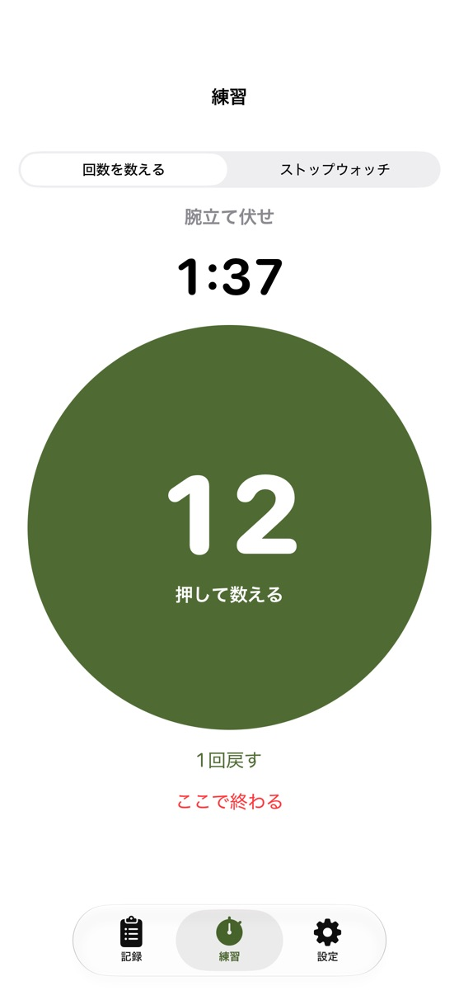
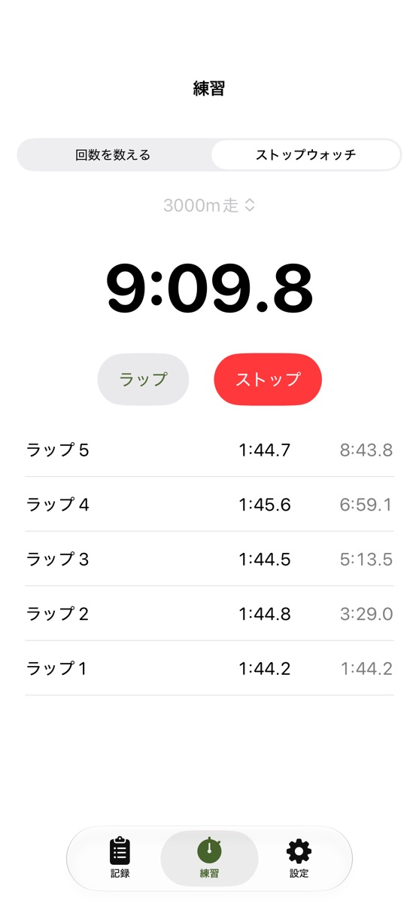
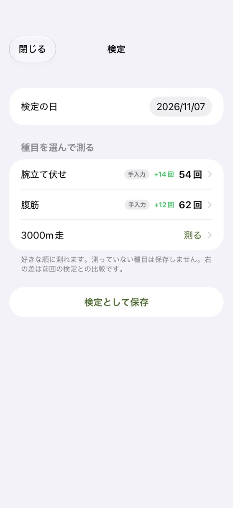

FEATURES
できること
押して数える2分タイマー
腕立て伏せ・腹筋は、丸を押して回数を数えるだけ。1分前・30秒前・10秒前から声でお知らせ。
ラップつきストップウォッチ
3000m走は1周ごとにラップ。ペースの乱れが分かります。
目標まであと何回
前回の検定と自分で決めた目標から、あと何回・あと何秒かを表示。
種目ごとのグラフ（プラス）
伸びを週・月・年・全期間で。戦技など、自分で練習したい種目も足せます。
SCREENS
画面



PRICE
値段
無料
¥0
- 練習タイマー・ストップウォッチ
- 記録・検定モード
- 目標まであと何回
プラス
¥300（買い切り）
- 広告が消える
- 種目ごとのグラフ
- 種目の追加
2026年12月13日までに入れた方へ
2026年12月13日までにこのアプリを入れた方は、買わなくてもずっと全部無料で使えます（広告も出ません）。
2026年12月13日までにこのアプリを入れた方は、買わなくてもずっと全部無料で使えます（広告も出ません）。
FAQ
よくある質問
検定の基準や級の表は入っていますか？
入っていません。目標は、自分で決めた数字を入れてください。基準や実施方法は、所属の部隊の案内で確かめてください。
声が聞こえません。
iPhoneの音量を上げてください。声はマナーモードでも出ます。「1分前・30秒前・10〜1」の声は、タイマーが2分の時だけです。ほかの時間の時は「終了」だけです。
機種を変えたら記録は引き継げますか？
記録はiPhoneの中だけに保存しています。iPhoneのバックアップから復元すると引き継がれます。
SUPPORT
サポート
不具合・ご要望・ご質問は、メールでお知らせください。
お使いのiPhoneの機種・iOSのバージョン・アプリのバージョン（アプリの設定の「このアプリについて」）を書いていただけると、早く調べられます。
ご注意
- このアプリは個人が作った非公式のアプリです。防衛省・自衛隊とは関係ありません。
- 体調に合わせて、無理のない範囲で練習してください。